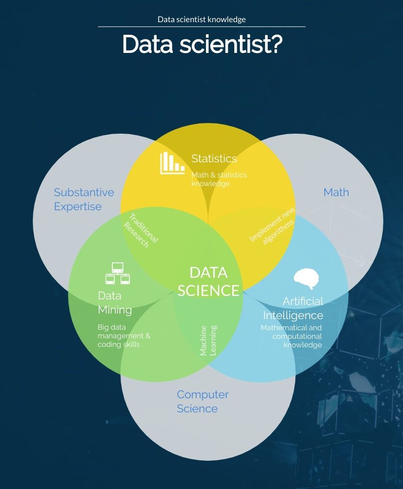

Until the end of the 90s l'unica figura professionale che aveva il compito di analizzare i dati ed estrarre informazioni utili da essi era l' "Data Analysist".
With the advent of web 2.0, dei social network e un aumento esponenziale delle capacità computazionali degli strumenti di calcolo questa professione è cambiata radicalmente e si è divisa in due: Analyst e Data science.
Analyst
I dati generati interni alle aziende o alle organizzazioni sono solitamente raccolti per il corretto funzionamento organizzativo e gestionale della complicata macchina aziendale. Per avere un ottimale utilizzo di questi è nato il Controllo di Gestione un’area aziendale nella quale intervengono competenze di Analysis dati, tecniche ed economiche.
Questo organo aziendale (inserito nella business intelligence) è oramai diventato indispensabile, soprattutto nelle grandi aziende, per la pianificazione e il controllo dell’andamento aziendale e per aiutare il management a fissare obiettivi e a raggiungerli in tutte le aree aziendali.
Questa professione tendenzialmente ragiona su dati di dimensioni contenute (rispetto al Data Scientist), strutturati e o campionari, per le indagini di mercato, o derivanti dalla gestione caratteristica di un’impresa, per la pianificazione aziendale.
Data Scientist
Internet traffic in 2016 ha raggiunto la dimensione dello Zettabyte (1 zb = 1 000 000 000 000 gb) una dimensione reputata teorica fino a qualche anno prima e assurda considerando che 20 anni prima si ragionava solo su Kilobyte e Megabyte.
The information present on the network sono sia strutturate che non strutturate (come video, audio, immagini ...) e per analizzare questi dati oramai l'analista "classico" non basta più ed è nata una figura professionale che potesse coniuga la formazione matematica/statistica con competenze informatiche per poter ragionare con grandi dimensioni di dati e diverse tipologie: il Data Scientist.
Data science is a branch of knowledge che si fonda su conoscenze relative all’integrazione dei dati, allo sviluppo di algoritmi e alle capacità tecnologiche: di fatto si concentra sulla risoluzione analitica di problemi complessi.
